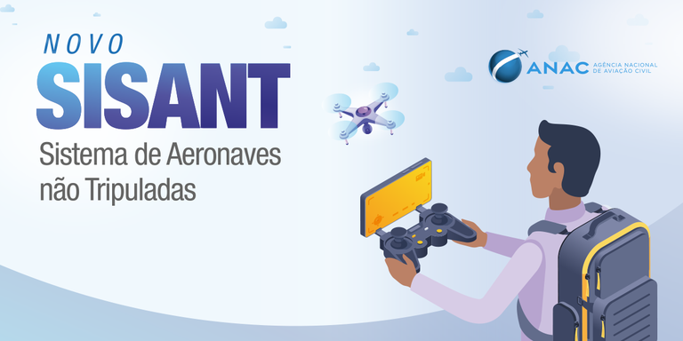

Implementei esteiras CI/CD e automações de teste no app e-Título. Atuei na padronização de testes e na elevação da confiabilidade em entregas críticas do projeto.
2022 – 2024
Cliente: Johnson & Johnson – QA Sênior
Implementei automações de testes com Robot Framework em CMS Drupal e apps mobile. Atuei na integração contínua e garantia de qualidade em ambientes remotos.
2021 – 2022
Cliente: Estácio – QA Sênior
Implementei testes mobile com Appium e WebdriverIO. Atuei na melhoria contínua de qualidade, impactando a nota do app nas lojas e o controle de releases.
2020 – 2021
Cliente: Caixa – Consultor de QA
Implementei critérios de verificação e automação em sistemas bancários. Atuei com testes de API, frameworks ágeis e indicadores de qualidade técnica.

2017 – 2020
Cliente: ANAC – QA Sênior
Implementei padrões de qualidade, testes automatizados e diretrizes de acessibilidade. Atuei na validação de sistemas como SISANT e na entrega de relatórios técnicos.